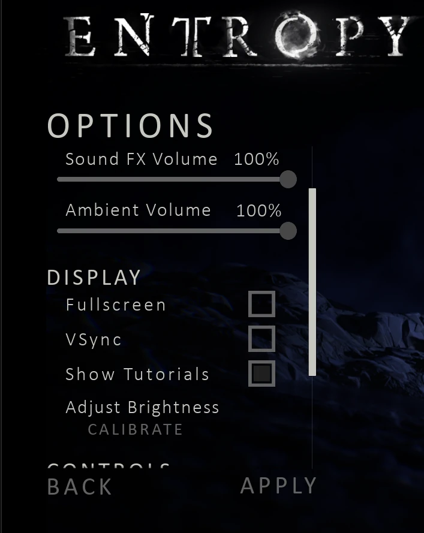

Entropy
A puzzle-platformer with horror elements, set in an ancient temple built around light-driven exploration.
Winner of Swedish Game Awards Game of the Year and Best Visuals
Genre: Puzzle
Engine: Unreal Engine 5
Team Size: 16
Platform: PC & PS5
Time: 9 weeks
I worked with the Sony PlayStation 5 SDK to implement
audio, rumble, audio-based rumble, lightbar colours and adaptive triggers for DualSense controllers.
Since this is all covered by an NDA signed with Sony, I will not share anything regarding the implementation.
All of the settings functionality is implemented by me, except for the UI. It has some video, audio and input settings.
The system uses Unreal Engines SaveGame object which allows for the saved values to be saved, loaded and modified across sessions via the settings menu.
This system is quite basic as Unreal Engine makes it very easy to save data across sessions using Blueprints.

A problem we had in Entropy was a lack of situational awareness because of how dark the game is and we didn't want to increase the brightness as that would ruin the immersion and feel we wanted.
The idea I came up with was having thousands of glowing insects crawling on the walls, floors and ceilings of the levels. We didn't want them to constantly glow so we settled for having them absorb the light you, as the player would emit from the light gun. Having them behave like old light switches that would glow in the dark meant that we could keep our environment dark and use emissiveness on the insects to help the player orient themselves.
Because we wanted them to interact with the light orbs the player would shoot, I originally designed the system using Blueprints but quickly switched to using Niagara- Unreal Engines particle system. This was because it would be highly inefficient to update potentially tens of thousands insects on the CPU. The insects use signed distance fields to traverse on meshes in the world and walk around pretty mindlessly using various forces. Implementing interactivity with code was a daunting task that actually proved to be quite easy using Blueprints. I also struggled a bit with creating custom scratch modules that allowed me to significantly simplify the particle update state by hiding complicated code beneath easily understandable function names. With all of this I managed to make the insects flee from the player and the impact of the light orbs. Making them glow temporarily after being exposed to light was a combination of a custom scratch module using input from Blueprints and using the particle colour in the material the insects used.
This was a whole adventure into interactive visual systems and learning Niagara, which I really turned out to enjoy using! What I found coolest was how easy it was to change variables from code as well as it being possible to call a blueprint function from the VFX system itself!
(I did that for another VFX system, not the insects.)

In addition to my main tasks, I also implemented the initial version of the character controller, a small system that made placing interactive sounds into the levels easy for designers and just generally helped out a bunch!